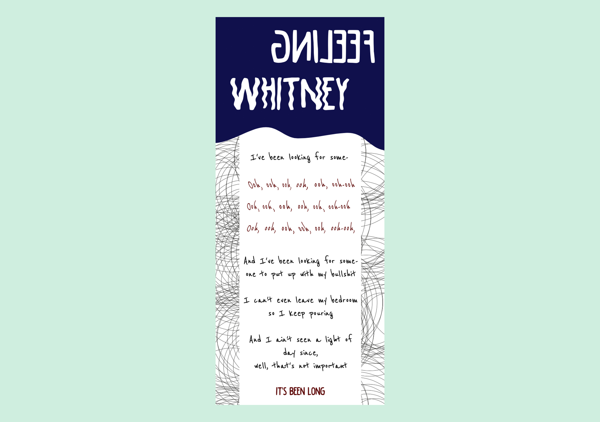

Vormgeving - Songtekst
Het ontwerpen van een songtekst naar keuze in de sfeer van die songtekst in mobiel formaat.Het ontwerp ligt over de interface van Spotify heen dus mag op zichzelf staan. Er mocht alleen gebruikt gemaakt worden van typografie en vorm.
Cijfer: 8/10
Behaalde leerdoelen
- Vormgevingsprincipes leren toepassen voor het web
- Het itereren, analyseren en onderzoeken van vormgevingsoplossingen
- Een beeldonderzoek/creaties proces doorgelopen en hiermee een verantwoord visueel ontwerp gemaakt.
- Een website responsive vormgeven